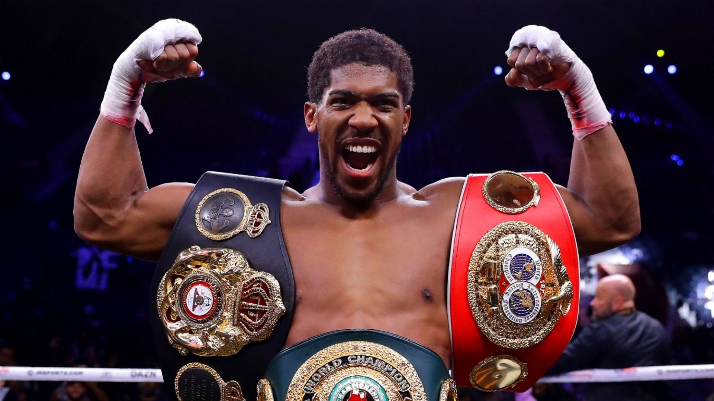

|
 Moje zainteresowanie Moim zainteresowaniem jest Boks. Uwielbiam ten sport i trenuje go już od roku w klubie sportów walki Fight K.O.mpany na ulicy Nałęczowskiej. Moim trenerem jest Mateusz Staszkiewicz. Trenuje wraz z moimi kolegami ze szkoły podstawowej, a konkretnie z Sebastianem, Tomkiem i Bartkiem. Boks to sport walki, który polega na uderzaniu rękami w rekawicach. W boksie zabronione jest kopanie i zapasy. Zacząłem trenować boks po tym jak obejrzałem walkę Anthinego Joshua. Bokser ten ma niesamowity styl walki. Anthony Joshua pseudonim AJ stoczył 27 walk z czego 24 wygrał, z czego 22 walki wygrał przez nokaut. Jego ostatnia walka to rewanż z Usykiem czyli ukraińskim bokserem. Niestety Anthony przegrał po bardzo długiej i ciężkiej walce. Lubie też oglądać walki legendarnych bokserów takich jak Mike tyson, Mohamed Ali i wielu innych. Ulubione strony WWW |